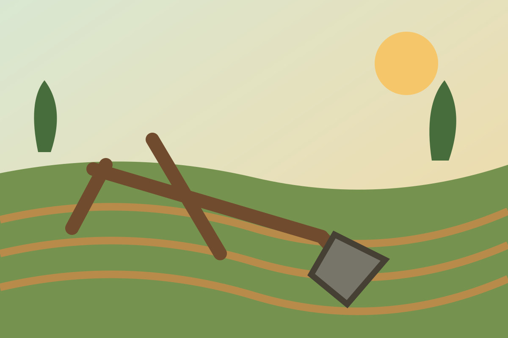
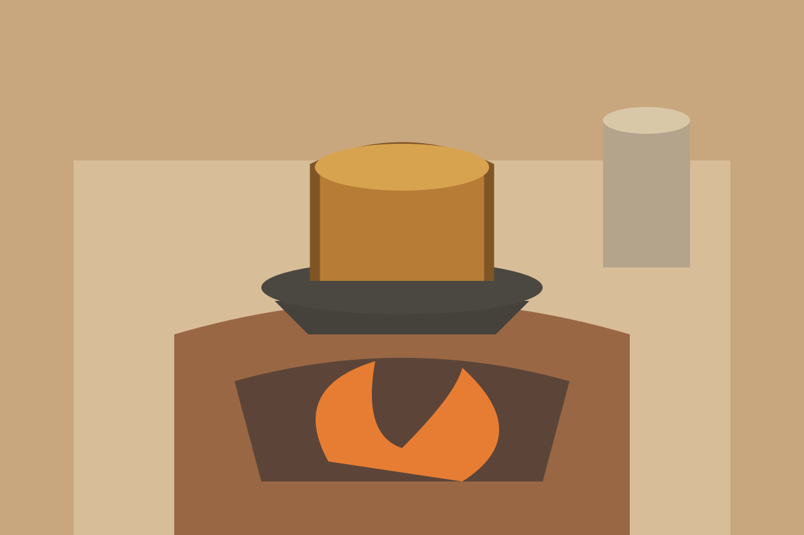

THE OBJECT ARCHIVE · ਵਿਰਾਸਤੀ ਵਸਤਾਂ
Objects that hold
our memory.
Explore traditional objects by their Punjabi names, everyday uses and the knowledge carried by the people who used them.
Images shown on these cards provide regional context; they are not claimed to be photographs of the exact object record. Each photo credit and licence is identified.

ਹਲContext photo: Satdeep Gill · CC BY-SA 4.0Hal ਹਲ
A traditional plough used to open and turn soil before sowing.
View record ↗Panjali ਪੰਜਾਲੀ
A yoke associated with harnessing draught animals for farm work.
View record ↗Daati ਦਾਤੀ
A hand tool used for cutting crops, grass and plant material.
View record ↗
ਚੁੱContext photo: Sanyam Bahga · CC BY-SA 3.0Chulha ਚੁੱਲ੍ਹਾ
A traditional household hearth used for cooking with solid fuel.
View record ↗Madhaani ਮਧਾਣੀ
A hand-operated churn used in preparing butter from curd.
View record ↗ ਮੰContext photo: SAGANP20 · CC BY-SA 4.0
ਮੰContext photo: SAGANP20 · CC BY-SA 4.0Manja ਮੰਜਾ
A woven cot used for sitting, resting and sleeping.
View record ↗Chakki ਚੱਕੀ
A hand-operated mill traditionally used to grind grain.
View record ↗Gaggar ਗੱਗਰ
A traditional vessel for carrying or storing water.
View record ↗Charsa ਚਰਸਾ
An animal-powered water-lifting arrangement for irrigation.
View record ↗Photo sources and licences: Bullock cart — Satdeep Gill (CC BY-SA 4.0) · Punjabi kitchen — Sanyam Bahga (CC BY-SA 3.0) · Mannan mud houses — SAGANP20 (CC BY-SA 4.0).
No objects found. Try another search.
These are introductory records. Names and descriptions can vary by district and family tradition. Records are not marked as historically verified until a regional source and image provenance are added.